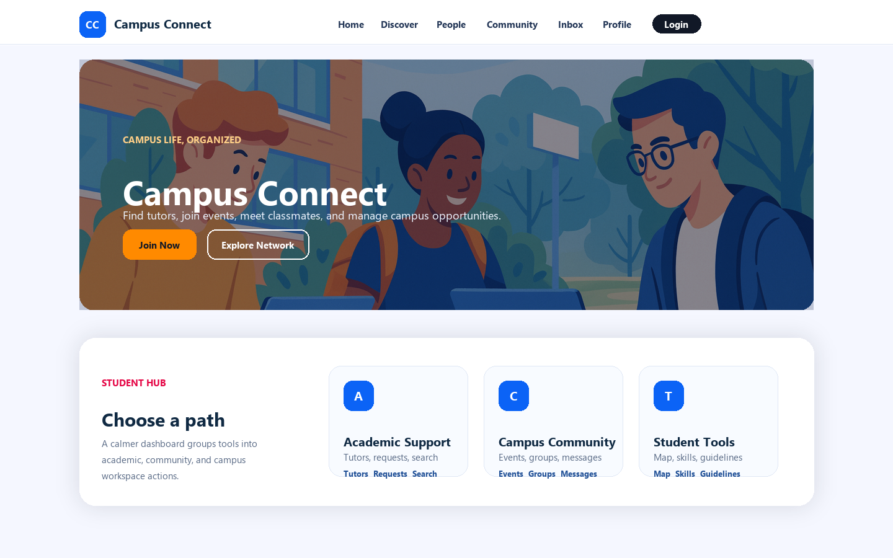

JavaScript · Student hub
Campus Connect
A campus interface for discovering tutors, groups, events, and study partners.
HTML · CSS · JavaScript
- Find a tutor
- Explore events
- Save a profile

Tutors, events, and groups
Campus Connect brings tutor listings, events, groups, profiles, and messaging screens into a student hub. Search and filters help visitors find people and activities.
Frontend development
I built the pages with HTML, CSS, and JavaScript, including responsive cards, form validation, and mobile navigation. Profile details and saved actions use localStorage.
Accounts and data
Account, verification, and messaging flows run locally in the browser. The app has no shared database or email delivery and is an independent student project.